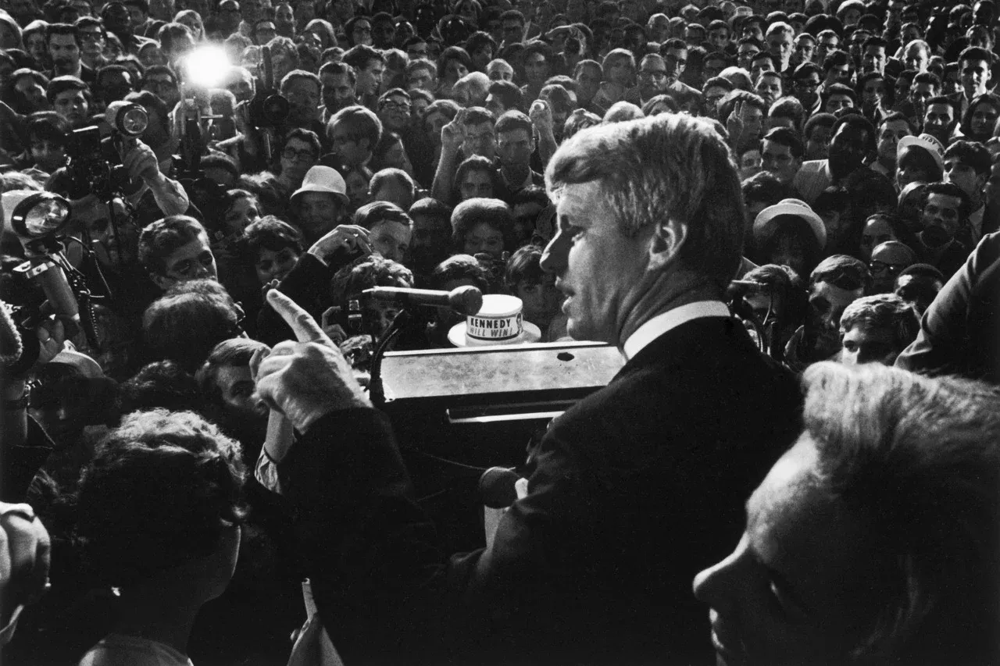

Fiction
That Terrible Night in June, 1968
All our shadows were growing longer, too soon in our day.
From the novel Not Our Fathers’ Dreams

“The weight of this sad time we must obey,
speak what we feel, not what we ought to say.”— Edgar, King Lear
It wasn’t like that. I don’t care what you heard.
Each generation is given just so many choices; the rest it must create. They don’t just hand them to you -- that’s the point. Nobody set out to where they ended up. There was no giant leap of preordained intent. Alexander Barish Fongold was convinced he would be a Nietzschean artist who stood on the tip of Old Society’s pyramid and smashed through to define the culture and society of the Next. For this, he was ready.
Fong’s future had once been laid out before him, a few spokes emanating from the hub of his time and place, a wheel that began turning in Brooklyn, a family of lawyers, of Jews, that rolled through the usual blitz of boyhood battles into this cloistered New England campus, just a few spokes for his generation. Until the earth shifted, the wheel spun wildly, couldn’t find traction, the spokes were crushed, it turned too fast, plummeted into unknown territory, the brakes burned out. The lines splayed like a Pollack painting, vivid but poorly understood. For this, he was not prepared.
You don’t look to have consequence so early in your life. Fong liked to believe he was operating under the Prince Hal paradigm: fuck around royally until you inherit the throne. But daddy was not a king, despite his aspirations, and this was a time that stole away the soft cushions.
Fongosophy: all our shadows were growing longer, too soon in our day
The June night of 1968 when Fong’s sixties began, the night that set courses that veered to destruction, some self, some world-induced, had actually started off well. Donna was with him, up from Vassar, to celebrate this weekend his soon-to-be, not-entirely-expected graduation. Helping him slough off everybody solemnly saying, “plastics,” then laughing hysterically at their original interpretation. He began taking for granted the entrance to the mysteries that had confounded him:
-- lying on his bed, naked, her raised toes painting pictures in the condensation on the window. With him there
-- a letter from her, saying, “Today I got a note from Mrs. Wompel, Head of the Sociology Department, telling me I had passed my comps. I haven’t taken my comps yet. Perhaps time is unreal after all.”
-- an arm to hold, a person to dance with, a partner to talk with at parties and meals, a date, him, dateless guys now looked at him
-- a slap on her butt, and her angry response, which surprised him but told him he was in a relationship
-- sitting on opposite ends of the bed, he clipping his nails in his underwear, she drying her hair, the noise surrounding them like a warm bath, looking up, smiling at the realization of each other, all in the silent conversation of lovers.
Donna.His first love, his first lover.Yet her presence was forbidden.She needed to be hidden from the boot steps and check-in clink of the night watchman as he made his rounds. He was a pariah to the parietal hours.He spread two mattresses next to each other, taking the one from Meteor’s room, his former roommate who had burned out, failed one too many course, and was now exposed to the swift cruel justice of the Selective Service System.Fong turned the bed on its side against the wall, its four iron legs pointing out like a faithful dog waiting to be rubbed. In the mornings he restored everything to its place, and from his single bed greeted his Mom with excessive innocence and adherence to ritual, one of the last times he would choose that side of custom. During the festivities of the day, Fong overheard his mother having an urbane, witty, intellectual conversation with the extraordinary Professor Martino. His Mom!
Donna lay exhausted, from traveling up that day, parties, screwing their heads off. Something stirred him, though, at four a.m. that June morning, what sense at work he did not know, his first suspicion of an adult revelation: that most moments in life which cause irrevocable change are not for the better.
Fong's room was on the top floor of one of the new residential houses that had replaced fraternities. His class of ’68 was the first to inhabit its egalitarian brick and glass, each room the same, in which residents were placed by lottery, the discrimination of chance, not selection -- a different fate to blame.
He wobbled heavy-lidded down six flights of stairs to the basement, clutching the cold metal railings, the rough brick walls scraping his shoulder.On what impulse, he did not know.A harsh static noise drenched the air as he entered the bleak bottom dwelling room where they allowed the house television, the dank gathering spot for weekly views of “Star Trek” and “The Man from UNCLE.”James Steele sat there alone.He was one of the few black students in Fong’s class: this was a rare sighting, since even in the classes they shared, neither of them qualified as regular attendants..He was short and stocky; a couple of weeks ago, Fong had kidded him about his farmer’s tan, his arms darker with the longer days.Thinking, in the interstices of thought, it was cool to kid a black guy about his tan.James wore a white t-shirt and white boxer shorts; against the black cushioned chair he was a semaphore of underwear. He clutched his knees with his arms this four a.m., staring at the TV, its images a blur to Fong’s unfixed eyes. But they were loud, random, insistent.
“What happened?” he asked.
“They shot Bobby Kennedy. He’s gonna die too,” James said.
Fong’s vision did a phase shift. The patterns on the screen cohered into a chaos, pandemonium, an overhead view of Bobby lying down, in the stillness that preceded the end of dreams. A dark pool haloed his head. A stunned crowd screamed. A suited man stared. A sitting woman sobbed. The camera was insistent. If you have tears... look at the lens. Fong gaped, his head drew forward, unable to hear what was being said, shouts and whispers, cries and prayers, if Oh God Oh God was a prayer, or just a voice to hurt and confusion. The pictures repeated over and over, didn’t improve, a carousel without a stop and no ring to catch, swirling past other images:
– high school economics class with Mr. Carlton; Ricky diAngelo, of all people, the lightest weight in the class, opens the door without knocking and before Carlton can get off a blast announces that Mr. Gregor, a moron of a history teacher, had just learned that President Kennedy had been shot and wanted to let them know;
– next period in French class he sees through the window the flag at the Veteran’s Hospital lowered to half mast, down wind of the chance of recovery, and as he watches Monsieur Duprés catches him and says, “We must do our jobs, too,” as if Fong and he had to carry on, as if it mattered;
– in the diner on Major Street; word spreads about Martin Luther King, shot and dead, and Fong asserts to the rest of the booth that King preached the most un-American of philosophies, non-violence, and the true country has caught up with him.
Now another moment to always remember where he was when. He was just twenty-one, just breaching his minority, he’d had enough of such moments. He wanted the men, not the memories. It was as if they all lost their fathers at the same time, cut loose without the framework that had shaped their assumptions, and his dad was already once dead. He wanted him back, and the others, to explain to him important things, in the time to come, so he wouldn’t have to invent new answers to new questions, and become an aberration.
The TV went on without him. He left James unmoving, cradling his legs and rocking slightly in the chair. He climbed the six flights back to his room, pulling on the rails to get him up.
“Hey, Donna.” He pushed her, softly.
She groaned, plowed her head more deeply into the pillow. He pushed again, harder. She turned her head slightly, so that he could see the thin film of moisture on the side she’d been sleeping on.
“It’s Bobby Kennedy,” he said, as if the context was obvious. He waited, wanting to cushion the blow, be another pillow. There was nothing between him and the words. She just lay there, made a little, innocent squeak.
“Bobby Kennedy, he’s been shot, he’s dead.” They were the only words that could be spoken. He didn’t care who heard him, let the night watchmen descend; follow their rules, you end up in their hell.
She lifted her head off the pillow.Hair wrapped her face so that he couldn’t see it.She groaned a short hollow sound of incomprehension, said, “What?” and dropped back asleep.He tried to join her, but sleep seemed like a threat, an exposure to more mysteries he didn’t understand, the isolated back alley shortcuts he wouldn’t take as a child, the whisperings of adults, the deaths of men. He wanted to know who had the meaning. A vacant place in America permeated the room like God’s mist before Passover, killing first born hopes. He had volunteered for bobby. bobby was going to end the war. bobby was going to set him free. But there was no-bobby to lead them to peace, open up his possibilities, restore his path, there was war far away and now more shots fired at home. Time to duck, you sucker. But where?